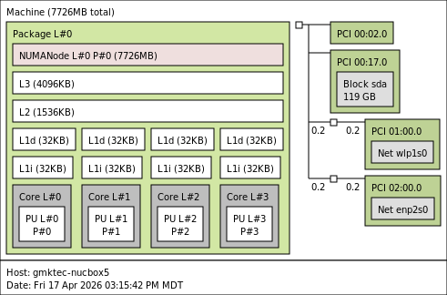
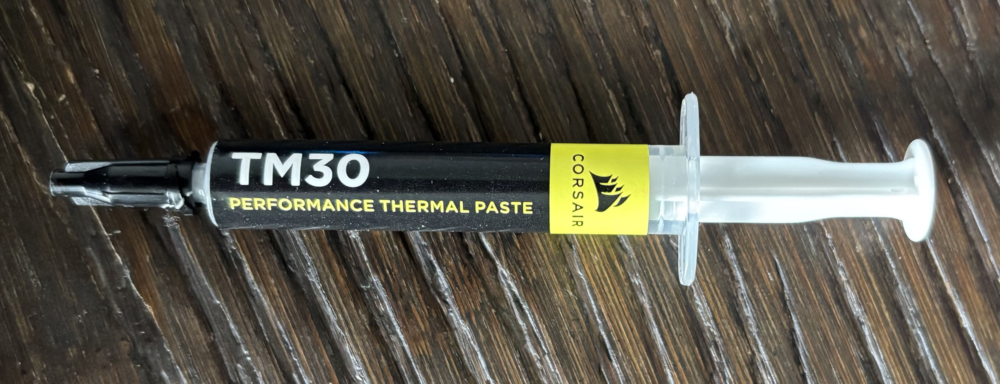
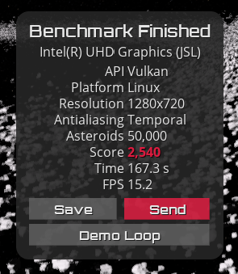
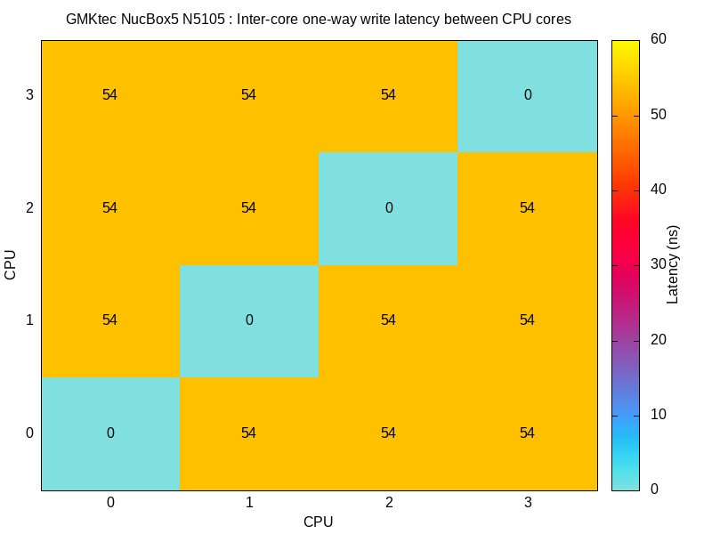

Ryder Hutchings
Ryder HutchingsIs the GMKtec NucBox5 Dead or Alive After 1 Year?
Posted on YouTube (1-year update): https://youtu.be/3xebrmU7vVk
[!TIP] Update (Apr 2026): It’s now been over two years, and it’s still running reliably. Power efficiency remains excellent, but the Celeron N5105 is starting to show its age for heavier workloads.
Basic Information:
- Mfr. URL (official): https://www.gmktec.com/
- PC purchased from: Amazon
- PC purchase date: October 22, 2023
- PC specs (as tested): 8GB RAM + 128GB SSD
- PC price (as tested): $127.19
Linux/System Information:
# output of `screenfetch`
_,met$$$$$gg. ryderhutchings@gmktec-nucbox5
,g$$$$$$$$$$$$$$$P. OS: Debian 13 trixie
,g$$P"" """Y$$.". Kernel: x86_64 Linux 6.12.74+deb13+1-amd64
,$$P' `$$$. Uptime: 57m
',$$P ,ggs. `$$b: Packages: 1411
`d$$' ,$P"' . $$$ Shell: bash 5.2.37
$$P d$' , $$P Disk: 4.1G / 115G (4%)
$$: $$. - ,d$$' CPU: Intel Celeron N5105 @ 4x 2.9GHz [35.0°C]
$$\; Y$b._ _,d$P' GPU: UHD Graphics
Y$$. `.`"Y$$$$P"' RAM: 680MiB / 7725MiB
`$$b "-.__
`Y$$
`Y$$.
`$$b.
`Y$$b.
`"Y$b._
`""""
# output of `uname -a`
Linux gmktec-nucbox5 6.12.74+deb13+1-amd64 #1 SMP PREEMPT_DYNAMIC Debian 6.12.74-2 (2026-03-08) x86_64 GNU/Linux
System Topology:

Note: lstopo results may be missing some information on new and strange SoCs.
Benchmark Results:
CPU
[!NOTE] Performance is in line with low-end modern CPUs, fine for general use, but slow for sustained or heavier workloads.
Geekbench 6 results:
- See: https://browser.geekbench.com/v6/cpu/17683434 and https://browser.geekbench.com/v6/cpu/17683608
- 555 Single-Core Score / 1635 Multi-Core Score
top500-benchmark results:
-
22.911 Gflops at 16.5W, for ~1.389 Gflops/W
Click to expand HPLinpack / top500-benchmark results
================================================================================
HPLinpack 2.3 -- High-Performance Linpack benchmark -- December 2, 2018
Written by A. Petitet and R. Clint Whaley, Innovative Computing Laboratory, UTK
Modified by Piotr Luszczek, Innovative Computing Laboratory, UTK
Modified by Julien Langou, University of Colorado Denver
================================================================================
An explanation of the input/output parameters follows:
T/V : Wall time / encoded variant.
N : The order of the coefficient matrix A.
NB : The partitioning blocking factor.
P : The number of process rows.
Q : The number of process columns.
Time : Time in seconds to solve the linear system.
Gflops : Rate of execution for solving the linear system.
The following parameter values will be used:
N : 23314
NB : 256
PMAP : Row-major process mapping
P : 1
Q : 4
PFACT : Right
NBMIN : 4
NDIV : 2
RFACT : Crout
BCAST : 1ringM
DEPTH : 1
SWAP : Mix (threshold = 64)
L1 : transposed form
U : transposed form
EQUIL : yes
ALIGN : 8 double precision words
--------------------------------------------------------------------------------
- The matrix A is randomly generated for each test.
- The following scaled residual check will be computed:
||Ax-b||_oo / ( eps * ( || x ||_oo * || A ||_oo + || b ||_oo ) * N )
- The relative machine precision (eps) is taken to be 1.110223e-16
- Computational tests pass if scaled residuals are less than 16.0
================================================================================
T/V N NB P Q Time Gflops
--------------------------------------------------------------------------------
WR11C2R4 23314 256 1 4 368.77 2.2911e+01
HPL_pdgesv() start time Fri Apr 17 18:18:24 2026
HPL_pdgesv() end time Fri Apr 17 18:24:32 2026
--------------------------------------------------------------------------------
||Ax-b||_oo/(eps*(||A||_oo*||x||_oo+||b||_oo)*N)= 3.39832969e-03 ...... PASSED
================================================================================
Finished 1 tests with the following results:
1 tests completed and passed residual checks,
0 tests completed and failed residual checks,
0 tests skipped because of illegal input values.
--------------------------------------------------------------------------------
End of Tests.
================================================================================
sysbench results:
- See: akopytov/sysbench
CPU speed:
events per second: 2620.32
General statistics:
total time: 10.0014s
total number of events: 26211
Latency (ms):
min: 1.50
avg: 1.53
max: 9.53
95th percentile: 1.52
sum: 39992.22
Threads fairness:
events (avg/stddev): 6552.7500/4.44
execution time (avg/stddev): 9.9981/0.00
Thermals
- Monitoring:
sensors(installlm-sensors, runsensors-detectfirst)
The GMKtec NucBox5 has decent thermals out of the box. Since my original NucBox5 video I’ve replaced the thermal paste with Corsair TM30.

The fan is audible under load — noticeable but not loud.
| Test Condition | Temp (°C) | Notes |
|---|---|---|
| Idle (Desktop) | 33 | N/A |
| Web Browsing | 44-47 | Stable, light load |
| 1080p YouTube Playback | 48–50 | Stable, no throttling. VAAPI active |
| 4K YouTube Playback | 47 | Stable, VAAPI active (Video engine 31%), cooler than 1080p |
stress-ng (--cpu 4) |
65 | stress-ng --cpu 4 --timeout 600s |
stress-ng (--matrix 0) |
69 | Plateaued, stable, no throttling |
| sbc-bench run | 64 | N/A |
Power
- Shutdown power draw (at wall): 0.4 W
- Idle on desktop power draw (at wall): 5.7 W
- Maximum simulated power draw (
stress-ng --matrix 0): 15 W - During Geekbench multicore benchmark: 17 W
- During
top500HPL benchmark: 16.5 W
Disk
[!NOTE] SSD performance is adequate, but clearly budget-tier—good enough for everyday use, not heavy I/O.
Onboard SSD (HS-SSD-E100N42)
| Benchmark | Result |
|---|---|
| iozone 4K random read | 43.7 MB/s |
| iozone 4K random write | 119.4 MB/s |
| iozone 1M random read | 417.5 MB/s |
| iozone 1M random write | 375.4 MB/s |
| iozone 1M sequential read | 435.1 MB/s |
| iozone 1M sequential write | 392.7 MB/s |
Network
Note: All measurements were taken over Wi-Fi, not wired Ethernet.
iperf3 results:
iperf3 -c $SERVER_IP: 84.9 Mbpsiperf3 -c $SERVER_IP --reverse: 92.7 Mbpsiperf3 -c $SERVER_IP --bidir: 34.0 Mbps up, 66.8 Mbps down
GPU
[!NOTE] GPU is sufficient for desktop compositing and light workloads, but not suited for modern gaming.
glmark2 results:
=======================================================
glmark2 2023.01
=======================================================
OpenGL Information
GL_VENDOR: Intel
GL_RENDERER: Mesa Intel(R) UHD Graphics (JSL)
GL_VERSION: OpenGL ES 3.2 Mesa 25.0.7-2
Surface Config: buf=32 r=8 g=8 b=8 a=8 depth=24 stencil=0 samples=0
Surface Size: 800x600 windowed
=======================================================
[build] use-vbo=false: FPS: 2032 FrameTime: 0.492 ms
[build] use-vbo=true: FPS: 2515 FrameTime: 0.398 ms
[texture] texture-filter=nearest: FPS: 2384 FrameTime: 0.420 ms
[texture] texture-filter=linear: FPS: 2403 FrameTime: 0.416 ms
[texture] texture-filter=mipmap: FPS: 2391 FrameTime: 0.418 ms
[shading] shading=gouraud: FPS: 2173 FrameTime: 0.460 ms
[shading] shading=blinn-phong-inf: FPS: 2173 FrameTime: 0.460 ms
[shading] shading=phong: FPS: 2048 FrameTime: 0.488 ms
[shading] shading=cel: FPS: 2015 FrameTime: 0.496 ms
[bump] bump-render=high-poly: FPS: 1456 FrameTime: 0.687 ms
[bump] bump-render=normals: FPS: 2506 FrameTime: 0.399 ms
[bump] bump-render=height: FPS: 2454 FrameTime: 0.408 ms
[effect2d] kernel=0,1,0;1,-4,1;0,1,0;: FPS: 1714 FrameTime: 0.584 ms
[effect2d] kernel=1,1,1,1,1;1,1,1,1,1;1,1,1,1,1;: FPS: 1052 FrameTime: 0.951 ms
[pulsar] light=false:quads=5:texture=false: FPS: 2246 FrameTime: 0.445 ms
[desktop] blur-radius=5:effect=blur:passes=1:separable=true:windows=4: FPS: 856 FrameTime: 1.168 ms
[desktop] effect=shadow:windows=4: FPS: 1351 FrameTime: 0.740 ms
[buffer] columns=200:interleave=false:update-dispersion=0.9:update-fraction=0.5:update-method=map: FPS: 481 FrameTime: 2.082 ms
[buffer] columns=200:interleave=false:update-dispersion=0.9:update-fraction=0.5:update-method=subdata: FPS: 724 FrameTime: 1.381 ms
[buffer] columns=200:interleave=true:update-dispersion=0.9:update-fraction=0.5:update-method=map: FPS: 465 FrameTime: 2.154 ms
[ideas] speed=duration: FPS: 1977 FrameTime: 0.506 ms
[jellyfish] <default>: FPS: 1580 FrameTime: 0.633 ms
[terrain] <default>: FPS: 213 FrameTime: 4.697 ms
[shadow] <default>: FPS: 756 FrameTime: 1.324 ms
[refract] <default>: FPS: 371 FrameTime: 2.701 ms
[conditionals] fragment-steps=0:vertex-steps=0: FPS: 2061 FrameTime: 0.485 ms
[conditionals] fragment-steps=5:vertex-steps=0: FPS: 2049 FrameTime: 0.488 ms
[conditionals] fragment-steps=0:vertex-steps=5: FPS: 2061 FrameTime: 0.485 ms
[function] fragment-complexity=low:fragment-steps=5: FPS: 2045 FrameTime: 0.489 ms
[function] fragment-complexity=medium:fragment-steps=5: FPS: 2039 FrameTime: 0.490 ms
[loop] fragment-loop=false:fragment-steps=5:vertex-steps=5: FPS: 2044 FrameTime: 0.489 ms
[loop] fragment-steps=5:fragment-uniform=false:vertex-steps=5: FPS: 2053 FrameTime: 0.487 ms
[loop] fragment-steps=5:fragment-uniform=true:vertex-steps=5: FPS: 2057 FrameTime: 0.486 ms
=======================================================
glmark2 Score: 1718
=======================================================
vkmark results:
=======================================================
vkmark 2025.01
=======================================================
Vendor ID: 0x8086
Device ID: 0x4E61
Device Name: Intel(R) UHD Graphics (JSL)
Driver Version: 104857607
Device UUID: 289282cde44dcaf6782e386571974775
=======================================================
[vertex] device-local=true: FPS: 6307 FrameTime: 0.159 ms
[vertex] device-local=false: FPS: 6360 FrameTime: 0.157 ms
[texture] anisotropy=0: FPS: 5473 FrameTime: 0.183 ms
[texture] anisotropy=16: FPS: 5282 FrameTime: 0.189 ms
[shading] shading=gouraud: FPS: 4751 FrameTime: 0.210 ms
[shading] shading=blinn-phong-inf: FPS: 4670 FrameTime: 0.214 ms
[shading] shading=phong: FPS: 4081 FrameTime: 0.245 ms
[shading] shading=cel: FPS: 4017 FrameTime: 0.249 ms
[effect2d] kernel=edge: FPS: 4389 FrameTime: 0.228 ms
[effect2d] kernel=blur: FPS: 1543 FrameTime: 0.648 ms
[desktop] <default>: FPS: 2488 FrameTime: 0.402 ms
[cube] <default>: FPS: 7818 FrameTime: 0.128 ms
[clear] <default>: FPS: 8279 FrameTime: 0.121 ms
=======================================================
vkmark Score: 5035
=======================================================
GravityMark results:

GravityMark Score: 2540
LLM Inference
[!NOTE] Small models are usable, but anything above ~1–1.5B parameters becomes impractically slow on CPU.
Basic ollama LLM model inference results, sorted by average eval rate (fastest first):
| Model | Size | Avg tokens/sec | Usable? |
|---|---|---|---|
| smollm2:135m-instruct-q2_K | 88 MB | 26.74 | No, Q2 too aggressive |
| tinyllama:1.1b | ~638 MB | 13.14 | No — not chat model |
| tinyllama:1.1b-chat-v1-q4_K_M | ~400 MB | ~8-10 (est.) | Probably yes |
| smollm2:135m | 270 MB | 6.95 | Maybe |
| deepseek-r1:1.5b | 1.1 GB | 5.40 | Yes, best quality |
| tinyllama:1.1b-chat-v1-q2_K | 483 MB | 5.84 | No, Q2 too aggressive |
| smollm2:360m | 725 MB | 2.77 | No, too slow |
| llama3.2:3b | 2.0 GB | 2.34 | No, too slow |
[!IMPORTANT] System used around 16.6 to 19 W during inference.
Running benchmark 3 times using model: smollm2:135m-instruct-q2_K
| Run | Eval Rate (Tokens/Second) |
|---|---|
| 1 | 27.35 tokens/s |
| 2 | 27.22 tokens/s |
| 3 | 25.65 tokens/s |
| Average Eval Rate | 26.74 tokens/second |
Running benchmark 3 times using model: tinyllama:1.1b
| Run | Eval Rate (Tokens/Second) |
|---|---|
| 1 | 13.04 tokens/s |
| 2 | 12.53 tokens/s |
| 3 | 13.85 tokens/s |
| Average Eval Rate | 13.14 tokens/second |
Running benchmark 3 times using model: smollm2:135m
| Run | Eval Rate (Tokens/Second) |
|---|---|
| 1 | 7.00 tokens/s |
| 2 | 6.59 tokens/s |
| 3 | 7.28 tokens/s |
| Average Eval Rate | 6.95 tokens/second |
Running benchmark 3 times using model: deepseek-r1:1.5b
| Run | Eval Rate (Tokens/Second) |
|---|---|
| 1 | 5.41 tokens/s |
| 2 | 5.36 tokens/s |
| 3 | 5.43 tokens/s |
| Average Eval Rate | 5.40 tokens/second |
Running benchmark 3 times using model: smollm2:360m
| Run | Eval Rate (Tokens/Second) |
|---|---|
| 1 | 2.76 tokens/s |
| 2 | 2.77 tokens/s |
| 3 | 2.79 tokens/s |
| Average Eval Rate | 2.77 tokens/second |
Running benchmark 3 times using model: llama3.2:3b
| Run | Eval Rate (Tokens/Second) |
|---|---|
| 1 | 2.33 tokens/s |
| 2 | 2.38 tokens/s |
| 3 | 2.31 tokens/s |
| Average Eval Rate | 2.34 tokens/second |
Computer Vision Inference:
YOLOv8n (PyTorch, CPU)
| Metric | Result |
|---|---|
| Input Resolution | 640x640 |
| Threads | 4 |
| Latency (ms) | 324.3 ms |
| FPS | ~3.1 fps |
YOLOv8n (ONNX Runtime, CPU)
| Metric | Result |
|---|---|
| Input Resolution | 640x640 |
| Threads | 4 |
| Latency (ms) | 225.0 ms |
| FPS | ~4.4 fps |
MobileNetV2 (TFLite, CPU)
N/A — TensorFlow and tflite-runtime require AVX2 CPU instructions, which the Intel Celeron N5105 does not support.
Memory:
tinymembench results:
Click to expand tinymembench benchmark results
tinymembench v0.4.10 (simple benchmark for memory throughput and latency)
==========================================================================
== Memory bandwidth tests ==
== ==
== Note 1: 1MB = 1000000 bytes ==
== Note 2: Results for 'copy' tests show how many bytes can be ==
== copied per second (adding together read and writen ==
== bytes would have provided twice higher numbers) ==
== Note 3: 2-pass copy means that we are using a small temporary buffer ==
== to first fetch data into it, and only then write it to the ==
== destination (source -> L1 cache, L1 cache -> destination) ==
== Note 4: If sample standard deviation exceeds 0.1%, it is shown in ==
== brackets ==
==========================================================================
C copy backwards : 5685.3 MB/s
C copy backwards (32 byte blocks) : 5699.1 MB/s (0.4%)
C copy backwards (64 byte blocks) : 5676.1 MB/s
C copy : 5586.3 MB/s
C copy prefetched (32 bytes step) : 3452.0 MB/s
C copy prefetched (64 bytes step) : 3520.7 MB/s
C 2-pass copy : 4595.0 MB/s (0.1%)
C 2-pass copy prefetched (32 bytes step) : 2831.0 MB/s
C 2-pass copy prefetched (64 bytes step) : 2835.3 MB/s
C fill : 9201.6 MB/s
C fill (shuffle within 16 byte blocks) : 9202.9 MB/s
C fill (shuffle within 32 byte blocks) : 9199.3 MB/s
C fill (shuffle within 64 byte blocks) : 9198.7 MB/s (0.4%)
---
standard memcpy : 8940.0 MB/s (0.2%)
standard memset : 15385.6 MB/s
---
MOVSB copy : 6013.2 MB/s
MOVSD copy : 6016.2 MB/s (0.6%)
SSE2 copy : 6022.2 MB/s
SSE2 nontemporal copy : 8692.1 MB/s
SSE2 copy prefetched (32 bytes step) : 5016.6 MB/s (0.2%)
SSE2 copy prefetched (64 bytes step) : 5864.9 MB/s
SSE2 nontemporal copy prefetched (32 bytes step) : 5648.4 MB/s
SSE2 nontemporal copy prefetched (64 bytes step) : 6752.1 MB/s (0.2%)
SSE2 2-pass copy : 5500.9 MB/s
SSE2 2-pass copy prefetched (32 bytes step) : 3864.9 MB/s
SSE2 2-pass copy prefetched (64 bytes step) : 4916.3 MB/s (0.4%)
SSE2 2-pass nontemporal copy : 3402.3 MB/s
SSE2 fill : 9329.9 MB/s
SSE2 nontemporal fill : 15406.5 MB/s
==========================================================================
== Memory latency test ==
== ==
== Average time is measured for random memory accesses in the buffers ==
== of different sizes. The larger is the buffer, the more significant ==
== are relative contributions of TLB, L1/L2 cache misses and SDRAM ==
== accesses. For extremely large buffer sizes we are expecting to see ==
== page table walk with several requests to SDRAM for almost every ==
== memory access (though 64MiB is not nearly large enough to experience ==
== this effect to its fullest). ==
== ==
== Note 1: All the numbers are representing extra time, which needs to ==
== be added to L1 cache latency. The cycle timings for L1 cache ==
== latency can be usually found in the processor documentation. ==
== Note 2: Dual random read means that we are simultaneously performing ==
== two independent memory accesses at a time. In the case if ==
== the memory subsystem can't handle multiple outstanding ==
== requests, dual random read has the same timings as two ==
== single reads performed one after another. ==
==========================================================================
block size : single random read / dual random read, [MADV_NOHUGEPAGE]
1024 : 0.0 ns / 0.0 ns
2048 : 0.0 ns / 0.0 ns
4096 : 0.0 ns / 0.0 ns
8192 : 0.0 ns / 0.0 ns
16384 : 0.0 ns / 0.0 ns
32768 : 0.0 ns / 0.0 ns
65536 : 3.0 ns / 4.4 ns
131072 : 4.4 ns / 5.5 ns
262144 : 5.9 ns / 7.0 ns
524288 : 7.5 ns / 8.5 ns
1048576 : 8.3 ns / 9.0 ns
2097152 : 12.5 ns / 15.6 ns
4194304 : 25.1 ns / 34.7 ns
8388608 : 75.4 ns / 107.0 ns
16777216 : 104.1 ns / 136.0 ns
33554432 : 120.9 ns / 152.0 ns
67108864 : 134.4 ns / 168.2 ns
block size : single random read / dual random read, [MADV_HUGEPAGE]
1024 : 0.0 ns / 0.0 ns
2048 : 0.0 ns / 0.0 ns
4096 : 0.0 ns / 0.0 ns
8192 : 0.0 ns / 0.0 ns
16384 : 0.0 ns / 0.0 ns
32768 : 0.0 ns / 0.0 ns
65536 : 3.0 ns / 4.4 ns
131072 : 4.4 ns / 5.5 ns
262144 : 6.0 ns / 7.0 ns
524288 : 7.5 ns / 8.5 ns
1048576 : 8.3 ns / 9.0 ns
2097152 : 12.4 ns / 15.6 ns
4194304 : 19.0 ns / 23.2 ns
8388608 : 68.6 ns / 97.0 ns
16777216 : 91.6 ns / 117.2 ns
33554432 : 102.6 ns / 123.6 ns
67108864 : 107.9 ns / 126.0 ns
c2clat results:
See: rigtorp/c2clat:
Core-to-core memory latency across the CPU.

sbc-bench results:
See: ThomasKaiser/sbc-bench:
* memcpy: 8927.6 MB/s, memchr: 13177.7 MB/s, memset: 15374.4 MB/s
* 16M latency: 122.7 123.2 122.8 123.2 123.6 123.8 127.1 139.1
* 128M latency: 124.9 125.9 125.1 125.3 124.9 128.4 132.3 163.9
* 7-zip MIPS (3 consecutive runs): 11941, 12014, 11990 (11980 avg), single-threaded: 3245
* `aes-256-cbc 524579.52k 758278.59k 798556.33k 808312.49k 811212.80k 810871.47k`
* `aes-256-cbc 525844.70k 761636.39k 796132.27k 808288.26k 810879.66k 811319.30k`
Click to expand sbc-bench benchmark results
GMKtec NucBox5 / Celeron N5105 @ 2.00GHz
Tested with sbc-bench v0.9.72 on Fri, 17 Apr 2026 21:09:28 -0600.
General information:
Information courtesy of cpufetch:
Name: Intel Celeron N5105
Microarchitecture: Tremont
Technology: 10nm
Max Frequency: 2.900 GHz
Cores: 4 cores
SSE: SSE,SSE2,SSE3,SSSE3,SSE4.1,SSE4.2
L1i Size: 32KB (128KB Total)
L1d Size: 32KB (128KB Total)
L2 Size: 1.5MB
L3 Size: 4MB
Celeron N5105 @ 2.00GHz, Kernel: x86_64, Userland: amd64
CPU sysfs topology (clusters, cpufreq members, clockspeeds)
cpufreq min max
CPU cluster policy speed speed core type
0 0 0 800 2900 -
1 0 1 800 2900 -
2 0 2 800 2900 -
3 0 3 800 2900 -
7727 KB available RAM
Policies (performance vs. idle consumption):
Status of performance related policies found below /sys:
/sys/module/pcie_aspm/parameters/policy: [default] performance powersave powersupersave
Clockspeeds (idle vs. heated up):
Before at 32.0°C:
cpu0: OPP: 2900, Measured: 2892
After at 58.0°C:
cpu0: OPP: 2900, Measured: 2892
Performance baseline
- memcpy: 8927.6 MB/s, memchr: 13177.7 MB/s, memset: 15374.4 MB/s
- 16M latency: 122.7 123.2 122.8 123.2 123.6 123.8 127.1 139.1
- 128M latency: 124.9 125.9 125.1 125.3 124.9 128.4 132.3 163.9
- 7-zip MIPS (3 consecutive runs): 11941, 12014, 11990 (11980 avg), single-threaded: 3245
aes-256-cbc 524579.52k 758278.59k 798556.33k 808312.49k 811212.80k 810871.47kaes-256-cbc 525844.70k 761636.39k 796132.27k 808288.26k 810879.66k 811319.30k
PCIe and storage devices:
- Intel JasperLake [UHD Graphics] (Onboard - Video): driver in use: i915
- Intel Jasper Lake USB 3.1 xHCI Host (Onboard - Other): driver in use: xhci_hcd
- Intel Jasper Lake SD (Onboard - Other): driver in use: sdhci-pci
- Intel Jasper Lake SATA AHCI (Onboard - SATA): driver in use: ahci
- Intel Jasper Lake eMMC (Onboard - Other): driver in use: sdhci-pci
- Intel Wireless 7265: Speed 2.5GT/s, Width x1, driver in use: iwlwifi,
- Realtek RTL8111/8168/8211/8411 PCI Express Gigabit Ethernet: Speed 2.5GT/s, Width x1, driver in use: r8169,
- 119.2GB “HS-SSD-E100N42 128G” SSD as /dev/sda: SATA 3.2, 6.0 Gb/s (current: 6.0 Gb/s), 12% worn out, drive temp: 17°C
Swap configuration:
- /dev/sda3: 6.2G (512K used)
Software versions:
- Debian GNU/Linux 13 (trixie)
- Compiler: /usr/bin/gcc (Debian 14.2.0-19) 14.2.0 / x86_64-linux-gnu
- OpenSSL 3.5.5, built on 27 Jan 2026 (Library: OpenSSL 3.5.5 27 Jan 2026)
Kernel info:
/proc/cmdline: BOOT_IMAGE=/boot/vmlinuz-6.12.74+deb13+1-amd64 root=UUID=198d4a7c-69e1-449f-93c1-62b7cba8ff0c ro quiet- Vulnerability Mmio stale data: Mitigation; Clear CPU buffers; SMT disabled
- Vulnerability Reg file data sampling: Mitigation; Clear Register File
- Vulnerability Spec store bypass: Mitigation; Speculative Store Bypass disabled via prctl
- Vulnerability Spectre v1: Mitigation; usercopy/swapgs barriers and __user pointer sanitization
- Vulnerability Srbds: Vulnerable: No microcode
- Kernel 6.12.74+deb13+1-amd64 / CONFIG_HZ=250
Phoronix Test Suite:
See: geerlingguy/sbc-general-benchmark.sh:
- pts/encode-mp3: 13.318 sec
- pts/x264 1080p: 20.22 fps
- pts/x264 4K: 4.60 fps
- pts/phpbench: 499416
- pts/build-linux-kernel (defconfig): 722.215 sec
Miscellaneous:
[!NOTE] Score is subjective: 1 = unplayable, 5 = playable with issues, 10 = perfect
| Game/System | Result | Notes |
|---|---|---|
| Minecraft Bedrock | 10/10 | Average 60 FPS |
| NES (Nestopia) | 10/10 | |
| SNES (Snes9x) | 10/10 | |
| N64 (Mupen64Plus-Next) | 6/10 | |
| Wii | N/A | No ROMs available |
| Minecraft Java | 10/10 | 30 FPS default; 60 FPS with settings adjustments (no mods) |
Used mainly for web browsing, programming, and Minecraft, this system proved to be stable and power-efficient over two years, handling everyday tasks reliably without major issues. Its main drawbacks are the limited 8GB RAM, which restricts heavier workloads, and weaker performance on Windows compared to Linux. Overall, it remains a solid ultra-budget option, though its discontinued availability is frustrating.